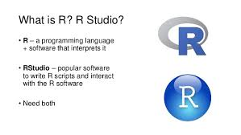

<div class="blurb">	  
    <section class="main-content">
	<h1> Welcome to my R Project Page! </h1>
	<p><strong> Table of Content </strong></p>
    <a href="#Introduction">Introduction</a>
    <br><a href="#p1">Project I - R - Data Analysis</a>
    <br><a href="#p2">Project II - Regression Analysis</a>
    <br><a href="#p3">Project III - Categorical Analysis</a>

    <br>
    
	
	<br>

	<h2><strong><a name="Introduction"><span style="color: green">Introduction</span></a></strong></h2>
	<p> This page contains the projects that I have worked on in my other Statistic courses. I was able to gain a better understanding of R, categorical and regression analysis. <p>

	
	<h2><strong><a name = "p1"> <span style = "color: green"> Project I - R - Data Analysis </span></a></strong></h2>
	<p> Used R to analyze dataset <a href = "../Projects/R_Data_Analysis.html"> Click here to see the project <a> <p>

	<h2><strong><a name = "p2"> <span style = "color: green"> Project II - Regression Analysis </span></a></strong></h2>
	<p> Conducted data analysis using regression models, ANOVA models, confidence intervals, residual plots and Q-Q plots <a href = "../Projects/Regression_Analysis.pdf"> Click here to see the project <a> <p>

	<h2><strong><a name = "p3"> <span style = "color: green"> Project III - Categorical Analysis </span></a></strong></h2>
	<p> Conducted Logistic regression and fit log-linear model on categorical variables. <a href = "../Projects/Categorical_Analysis.pdf"> Click here to see the project <a> <p>

	<p> <a href = "../index.html"> <a> <p> 

      </section>
</div>